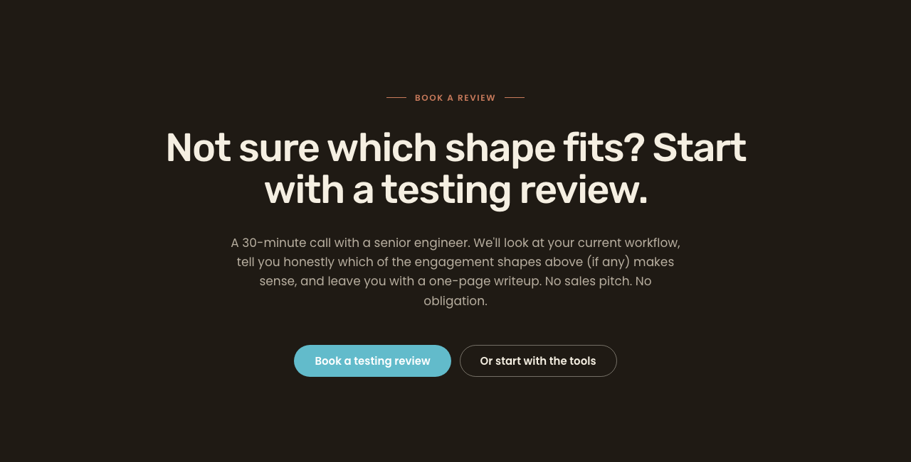
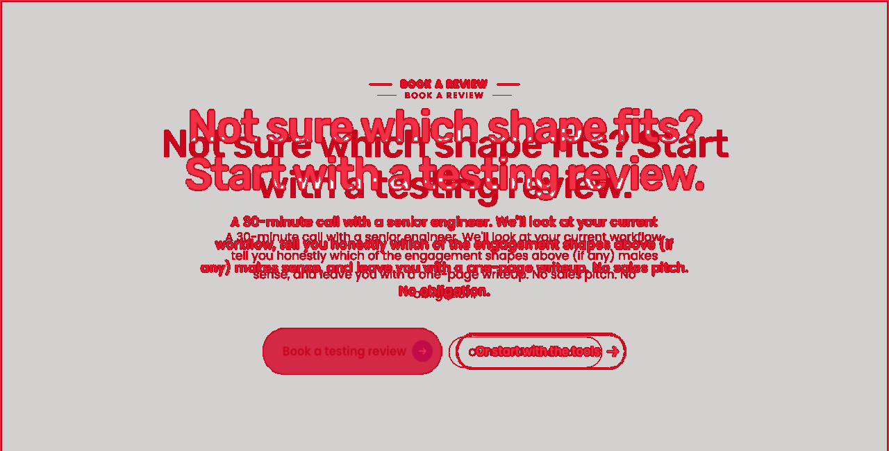
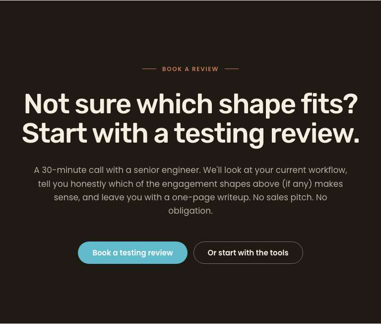

Date: 2026-05-11. Branch: aa/pl-sprint-5-cycle-3-closing-cta. Pages: /services, /about-us. Section: closing-CTA (theme--dark).
F applied two changes in dy-section.css:
max-width: none on .dy-section.theme--dark .dy-section__content:has(> .button + .button) > :not(.button) — defeats the .text rule's max-width: 640px at specificity 0,5,0 vs 0,4,0. The flex item now claims a full row, forcing the buttons onto the next flex line..dy-section.theme--dark .dy-section__content .text p { max-width: 640px; margin-inline: auto } — pushes the readability cap down to the <p> so body text remains ~75 chars/line while the outer .text flex item is unconstrained.| Page | Viewport | AE pixels | Area | Delta % | Layout match | Verdict |
|---|---|---|---|---|---|---|
| /services | 1280 | 121,130 | 833,280 | 14.5% | yes | MATCH |
| /services | 768 | 116,778 | 500,736 | 23.3% | yes | MATCH |
| /services | 375 | 128,068 | 308,625 | 41.5% | yes | MATCH |
| /about-us | 1280 | 61,718 | 688,640 | 9.0% | yes | MATCH |
| /about-us | 768 | 61,914 | 413,184 | 15.0% | yes | MATCH |
| /about-us | 375 | 55,636 | 198,000 | 28.1% | yes | MATCH |
The raw delta % reflects cosmetic pad/font-hinting deltas (the same baseline as other sections in this sprint). The defect-defining test — does body text share a row with the CTAs? — is now NO at all viewports for both pages.



All checks PASS (keyboard order, focus ring contrast, forced-colors, reduced-motion, 200% zoom, heading hierarchy, image alt, mobile touch targets). No change from prior cycle.
dy-section.css line 506 says 13.07:1; T's computation is 15.07:1. Non-blocking docs nit.:has(> .button + .button) + max-width: none combo is a layout hack that works but is brittle for future variants with a trailing third element. Long-term, wrap CTA pairs in a dedicated .cta-cluster SDC. Defer.